<!DOCTYPE html>
<html lang="en"><!-- InstanceBegin template="/Templates/AiCityB-01-Template02.dwt" codeOutsideHTMLIsLocked="false" -->

<head>
  <meta charset="UTF-8">
  <meta name="viewport" content="width=device-width, initial-scale=1.0">
  <meta http-equiv="X-UA-Compatible" content="ie=edge">

  <!-- Bootstrap 4 CSS 的 CDN -->
  <link rel="stylesheet" href="https://stackpath.bootstrapcdn.com/bootstrap/4.1.3/css/bootstrap.min.css"
    integrity="sha384-MCw98/SFnGE8fJT3GXwEOngsV7Zt27NXFoaoApmYm81iuXoPkFOJwJ8ERdknLPMO" crossorigin="anonymous">
  <!-- Fontawesom 的 CDN -->
  <link rel="stylesheet" href="https://use.fontawesome.com/releases/v5.5.0/css/all.css"
    integrity="sha384-B4dIYHKNBt8Bc12p+WXckhzcICo0wtJAoU8YZTY5qE0Id1GSseTk6S+L3BlXeVIU" crossorigin="anonymous">
  <!-- Google Icons CDN  -->
  <link rel="stylesheet" href="https://fonts.googleapis.com/icon?family=Material+Icons">

  <!-- My CSS file -->
  <link rel="stylesheet" href="css/mycss.css">
  <!-- InstanceBeginEditable name="doctitle" -->
  <title>樂捷市 社區資訊 - 里長服務</title>
  <meta name="description" content="AiCity Community WebSite 2019">
  <!-- InstanceEndEditable -->

<!-- InstanceBeginEditable name="head" -->
<!-- InstanceEndEditable -->
</head>

<body>
  <!-- Vue實例的掛載點 -->
  <div id='app'>

    <nav class="navbar navbar-expand-lg navbar-light bg-light">
      <a class="navbar-brand" href="AiCityB-31-Introduction.html">
		樂捷市社區網
      </a>
      <button class="navbar-toggler" type="button" data-toggle="collapse" data-target="#navbarSupportedContent"
        aria-controls="navbarSupportedContent" aria-expanded="false" aria-label="Toggle navigation">
        <span class="navbar-toggler-icon"></span>
      </button>

      <div class="collapse navbar-collapse" id="navbarSupportedContent">
        <ul class="navbar-nav mr-auto">

          <li class="nav-item dropdown">
            <a class="nav-link dropdown-toggle" href="#" id="navbarDropdown" role="button" data-toggle="dropdown"
              aria-haspopup="true" aria-expanded="false">
              <i class="fas fa-home"></i>社區管理
            </a>
            <div class="dropdown-menu" aria-labelledby="navbarDropdown">
              <a class="dropdown-item" href="index.html">社區介紹</a>
              <a class="dropdown-item" href="AiCityB-32-Calendar.html">管理行事曆</a>
              <a class="dropdown-item" href="AiCityB-33-Announcement.html">社區公告</a>
              <a class="dropdown-item" href="AiCityB-34-Meeting.html">會議紀錄及財務報表</a>
              <a class="dropdown-item" href="AiCityB-35-Regulation.html">社區規約</a>				
            </div>
          </li>
          <li class="nav-item dropdown">
            <a class="nav-link dropdown-toggle" href="#" id="navbarDropdown" role="button" data-toggle="dropdown"
              aria-haspopup="true" aria-expanded="false">
              <i class="fas fa-info"></i>社區資訊
            </a>
            <div class="dropdown-menu" aria-labelledby="navbarDropdown">
              <a class="dropdown-item" href="AiCityB-52-Transportation.html">交通資訊</a>
              <a class="dropdown-item" href="AiCityB-53-A7New.html">A7重劃區</a>
              <a class="dropdown-item" href="AiCityB-54-YellowPage.html">黃頁查詢</a>
              <a class="dropdown-item" href="AiCityB-55-County.html">里長服務</a>
              <a class="dropdown-item" href="AiCityB-56-Councillor.html">議員服務</a>
              <a class="dropdown-item" href="AiCityB-57-City.html">市府資訊</a>
              <a class="dropdown-item" href="AiCityB-58-Country.html">政府通告</a>
            </div>
          </li>
          <li class="nav-item dropdown">
            <a class="nav-link dropdown-toggle" href="#" id="navbarDropdown" role="button" data-toggle="dropdown"
              aria-haspopup="true" aria-expanded="false">
              <i class="fas fa-shopping-cart"></i>生活資訊
            </a>
            <div class="dropdown-menu" aria-labelledby="navbarDropdown">
              <a class="dropdown-item" href="AiCityB-71-Commerce.html">社區商店</a>
              <a class="dropdown-item" href="AiCityB-72-Restaurant.html">餐廳外賣</a>
              <a class="dropdown-item" href="AiCityB-73-Shopping.html">生活採購</a>
              <a class="dropdown-item" href="AiCityB-75-Health.html">健康養生</a>
              <a class="dropdown-item" href="AiCityB-76-Sport.html">運動休閒</a>
              <a class="dropdown-item" href="AiCityB-77-News.html">新聞娛樂</a>
              <a class="dropdown-item" href="AiCityB-78-Food.html">食譜教學</a>
            </div>
          </li>
        </ul>
        <form class="form-inline my-2 my-lg-0">
          <input class="form-control mr-sm-2" type="search" placeholder="Search" aria-label="Search">
          <button class="btn btn-outline-success my-2 my-sm-0" type="submit">Search</button>
        </form>
      </div>
    </nav>

    <!-- Jumbotron--><!-- InstanceBeginEditable name="JumbotronRegion" -->

      <div class="jumbotron jumbotron-fluid jumbotron-bg1 d-flex align-items-end">
        <div class="container">
		  	<div class="bg-lighter p-1" style="width:300px">
          		<h4 class="text-white" >里長服務站</h4>
          		<p class="lead text-white">讓社區與里長有最密切的接觸</p>
   			</div>
		</div>
	  </div>
		
 
    <!-- InstanceEndEditable -->
	  
    <!-- Web Page Title -->
	<!-- InstanceBeginEditable name="main_heading" -->
	<h2 id="main_heading"> </h2>
	<!-- InstanceEndEditable -->
	  
	<!-- Vue實例的掛載點 -->
    <!-- InstanceBeginEditable name="main_content" -->
    <article> 
    <div id="app" class="container-fluid ">
      <div class="row ">

        <div class="col-md-2">
          <h3>長庚里 里長服務</h3>
          <div class="list-group" id="MenuList" role="tablist">
            <a href="#Menu-B1" class="list-group-item list-group-item-action active" data-toggle="list">里長資訊</a>
            <a href="#Menu-B2" class="list-group-item list-group-item-action" data-toggle="list">鄰里介紹</a>
            <a href="#Menu-B3" class="list-group-item list-group-item-action" data-toggle="list">里長服務</a>
            <a href="#Menu-B4" class="list-group-item list-group-item-action" data-toggle="list">交通資訊</a>
            <a href="#Menu-B5" class="list-group-item list-group-item-action" data-toggle="list">環境資訊</a>
            <a href="#Menu-B6" class="list-group-item list-group-item-action" data-toggle="list">意見交流</a>
          </div>

        </div>
        <div class="col-md-10">

          <div class="tab-content">

            <div class="tab-pane active" id="Menu-B1" role="tabpanel">
              <!-- Menu B1 -->
              <div class="row mb-1">
                <h3>里長資訊 </h3>
              </div>
              <div class="row">
                <div class="card col-12">
                  <div class="card-header">鄰里新聞</div>
                  <div class="card-body">

                  </div>
                </div>
                <div class="card col-12">
                  <div class="card-header">政令宣導</div>
                  <div class="card-body">

                  </div>
                </div>
                <div class="card col-12">
                  <div class="card-header">活動紀錄</div>
                  <div class="card-body">

                  </div>
                </div>
              </div>

            </div>

            <div class="tab-pane" id="Menu-B2" role="tabpanel">
              <!-- Menu B2 -->
              <div class="row">
                <h3>長庚里介紹 </h3>
              </div>
              <div class="row">
                <div class="card col-12">
                  <div class="card-header">長庚里簡介</div>
                  <div class="card-body">
                    <p>
                      桃園市龜山區長庚里，鄰數26鄰，設籍男人人口數2,325人，女人人口數3,051人，總人口數5,376人(桃園市龜山區戶政事務所109年6月公布資料)，長庚里的前身為長庚醫護社區，由台塑集團王永慶創辦人民國67年開創，座落於桃園市龜山區文德路底，四面環山，山谷環抱。王創辦以融合居家、休閒、運動與自然生態平衡，自然力與公園化之理念設計。
                    </p>
                    <P>
                      長庚社區因創辦人是為體恤員工免舟車之勞，能安穩的工作，所以住在這裡的住戶以企業內員工為主，
                      又因社區內綠地美化、林蔭大樹、生態化、公園化等景致怡人，也因此成為多數人嚮往居住的一個好所在，員工申請排序每期上百人，入住者依眷屬宿舍管理辦法規定之流程申請。
                    </P>
                    <p>
                      長庚社區土地面積共 367 , 671 平方公尺（約 36 公頃）建築物2297戶，眷舍每戶為 30 至 67 坪，單身套房每戶14至24
                      坪。又為了打造優質的居住安全，管理單位配有駐警守衛、派出所警員巡邏，住戶為提升家園的安全，配合警民合作的治安防治，於91年由村長邀約熱心住戶及眷屬成立守望相助隊積極維護治安，協助防火防災宣導、環境維護、提升環保意識等，共同創造守望相助、安全的家園，實現【台灣健康治安社區】的健康社區。
                    </p>
                    <p>
                      因桃園捷運 A7 重劃區土地開發案，屬於長庚里部分特別規劃為 長庚里 A7 社區以便有別於原長庚社區。
                    </p>
                  </div>
                </div>
                <div class="card col-12">
                  <div class="card-header">行政區域</div>
                  <div class="card-body">
                    <div class="row">
                      <div class="col-12 col-md-6">
                        <p>龜山區 長庚里行政區域</p>
                        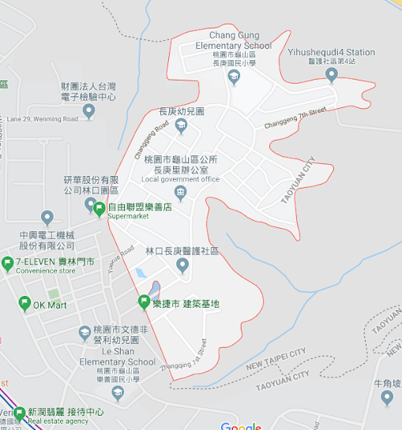
                      </div>
                      <div class="col-12 col-md-6">
                        <p>龜山區 樂善里行政區域</p>
                        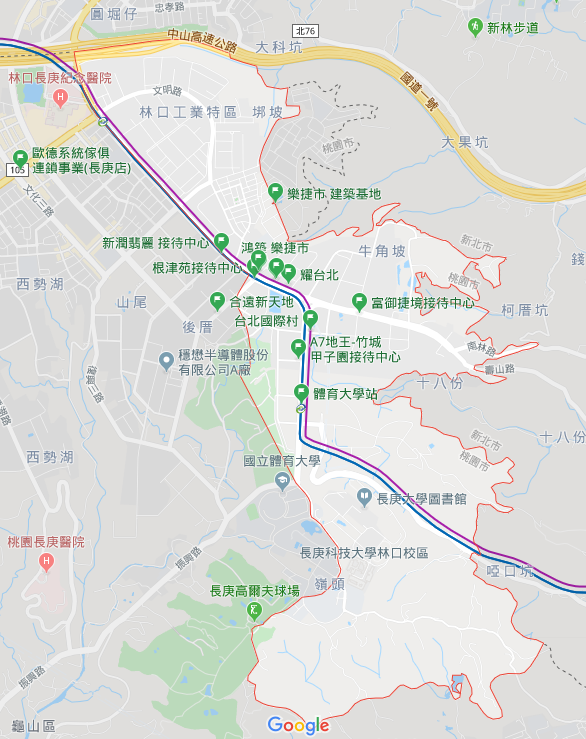
                      </div>
                    </div>
                  </div>
                </div>
                <div class="card col-12">
                  <div class="card-header">里長辦公室團隊</div>
                  <div class="card-body">
                    <div class="row">
                      <div class="col-12 col-md-6">
                        長庚里辦公處團隊如下：
                        <ul>
                          <li>鄰長團隊: 行政業務推動</li>
                          <li>守望相助隊: 治安維護</li>
                          <li>環境志工隊: 環境維護</li>
                          <li>健康促進計畫: 促進社區住戶健康</li>
                          <li>健走班: 運動減壓</li>
                          <li>運動班: 運動減壓</li>
                        </ul>
                      </div>
                      <div class="col-12 col-md-6">
                        <p>鄰長團隊</p>
                        <p>
                          長庚里共有26鄰，鄰長共有26位，設有鄰長聯誼會會長、文刊組、器材組、活動組、資訊組、總務組，主要推動六星計畫之社福醫療、產業發展、人文教育。
                        </p>
                      </div>
                      <div class="col-12 col-md-6">
                        <p>守望相助隊</p>
                        <p>
                          長庚里守望相助隊，由前村長方振華民國91年成立，長庚村護鄉巡守隊，於民國96年改名為長庚村守望相助巡守隊，99年改名為長庚村守望相助隊。
                        </p>
                        <p>
                          長庚里守望相助隊編制人數共45人，編組為巡守組、減災組、家暴防治組、醫療推廣組、環境組等共五組，主要推動六星計畫之社區治安、社福醫療、環保生態、人文教育。
                          長庚里守望相助隊歷屆分隊長
                        </p>
                        <p>
                          守望相助隊 主要任務 (45位)
                        <ol>
                          <li>長庚里巡守工作，協助維護社區治安。</li>
                          <li>協助警政機關勤務。</li>
                          <li>協助辦理災害搶救工作。</li>
                          <li>推動公益活動及社會服務。</li>
                          <li>協助里辦公室辦理各項任務。</li>
                          <li>配合警分局相關勤務。</li>
                        </ol>
                        </p>
                      </div>
                      <div class="col-12 col-md-6">
                        <p>環境志工隊</p>
                        <p>
                          於民國104年1月正式成立，編制共49人，編列五個小隊，主要推動六星計畫之環保生態、環境景觀、人文教育。</p>
                        <p>
                          環保志工隊 主要任務 (49位)
                        <ol>
                          <li>社區環境維護。</li>
                          <li>實施垃圾不落地。</li>
                          <li>杜絕蚊蟲孳生。</li>
                          <li>二手資源回收。</li>
                          <li>舉辦跳蚤市場。</li>
                        </ol>
                        </p>
                      </div>
                    </div>

                  </div>
                </div>
                <div class="card col-12">
                  <div class="card-header">長庚里特色</div>
                  <div class="card-body">
                    <div class="row">
                      <div class="col-12 col-md-4">
                        <p>
                          龜山區長庚里包括整個長庚醫護社區，屬於林口長庚醫院的員工及眷屬宿舍，大約有2300戶、近5000人口，包括醫師、護理師及醫院行政人員等，由於醫療人員集中，平均收入也相對較高，多年來在全台排名最富有的里中常常榜上有名。
                        </p>
                        <p>
                          整個長庚里外來、在地人口比例大約7比3，人口組成為青壯年為主，老年人口僅占3％，也有多數醫師、護理人員選擇在鄰近林口、龜山一地置產。另外加上A7區段徵收，還有7、8個建案仍在籌建中，預計未來完工後整個里人口會再增加至近8000人。
                        </p>
                      </div>
                      <div class="col-12 col-md-8">
                        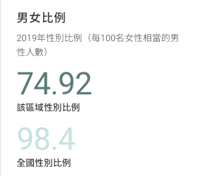
                        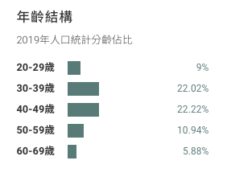
                        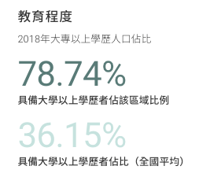
                        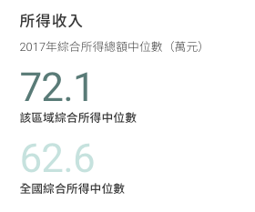
                      </div>
                    </div>

                  </div>
                </div>

                <div class="card col-12">
                  <div class="card-header">長庚里還境</div>
                  <div class="card-body">
                    <div class="row">
                      <div class="col-12 col-md-4">
                        <p>
                          長庚里社區環境綠化非常完善，隨處皆有樹木及綠地，並有多處公園及遊樂設施，彷彿身處在深山幽處或獨立之私人會所。環境綠化的實施使長庚里對環境景觀及環保生態上皆有卓越的貢獻。
                        </p>
                        <p>
                          社區內綠美化對減碳之貢獻為社區內綠美化之原則，廣植大量抗風性佳、林蔭大之榕樹、肯式南洋杉等喬木。綠（美）化作業中，社區總減碳量相當於燃燒3.85萬公升汽油產生量（一公升的汽油約產生2.2公斥的二氧化碳）。
                        </p>
                      </div>
                      <div class="col-12 col-md-8">
                        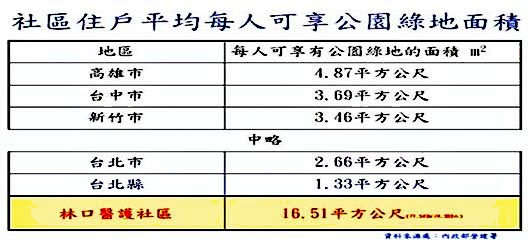
                        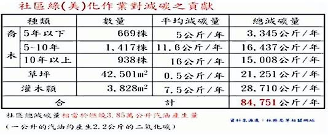
                      </div>
                    </div>

                  </div>
                </div>

              </div>
            </div>

            <div class="tab-pane" id="Menu-B3" role="tabpanel">
              <!-- Menu B3 -->
              <div class="row mb-1">
                <h3>里長服務 </h3>

              </div>
            </div>

            <div class="tab-pane" id="Menu-B4" role="tabpanel">
              <!-- Menu B4 -->
              <div class="row mb-1">
                <h3>交通資訊 </h3>
                <div class="row">
                  <div class="col-12">
                    <h3>桃園市龜山區樂活巴 </h3>
                    <p>長庚醫院線: L317, L318, L319</p>
                    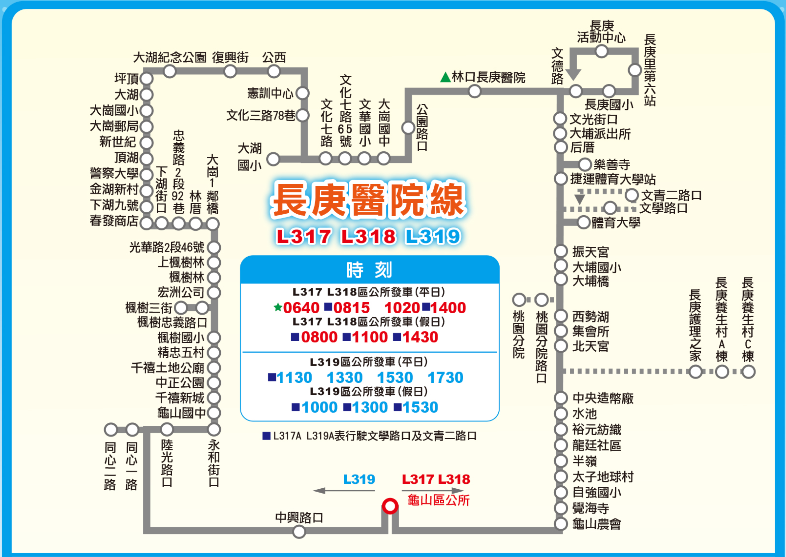
                  </div>
                  <div class="col-12">
                    <p>坪頂線: L326, L327</p>
                    
                  </div>
                  <div class="col-12">
                    <p>長庚醫療社區公車站</p>
                    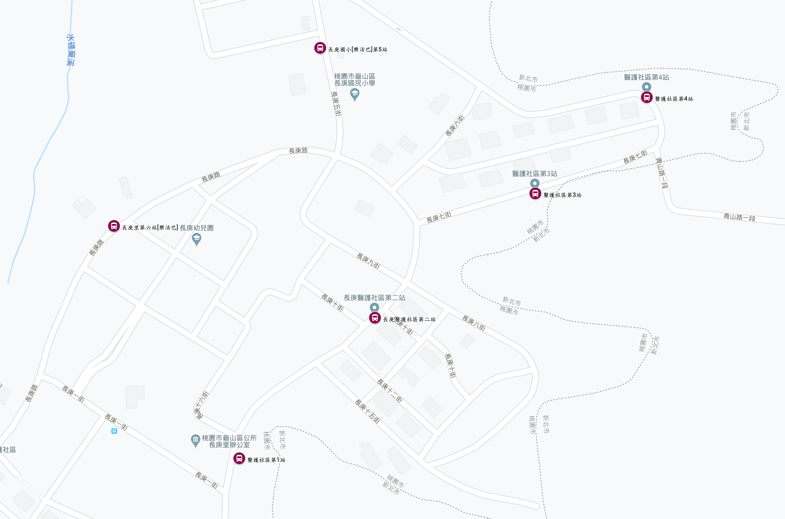
                  </div>
                </div>
                <div class="row">
                  <h3>汛航：林口總院 - 醫護社區</h3>
                  <div class="col-12">
                    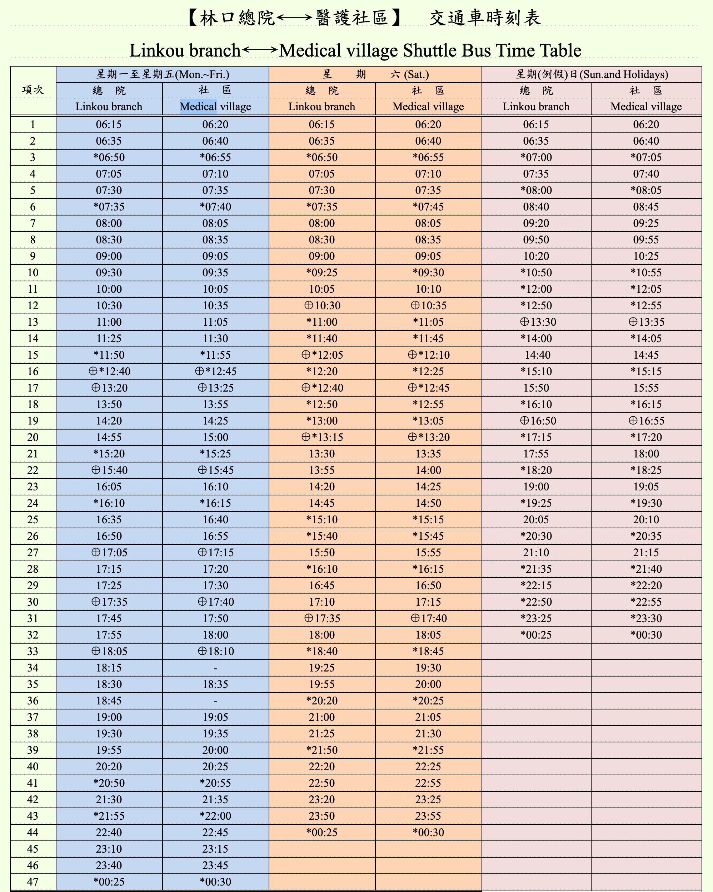
                  </div>
                  <div class="col-12">
                    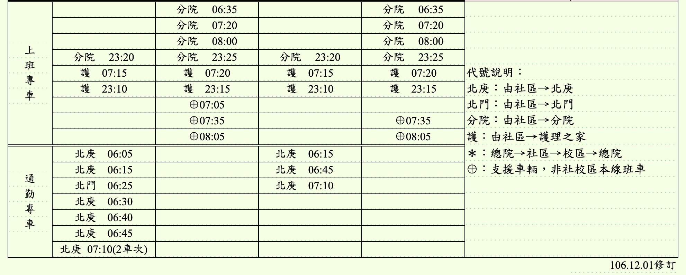
                  </div>

                </div>
              </div>
            </div>

            <div class="tab-pane" id="Menu-B5" role="tabpanel">
              <!-- Menu B5 -->
              <div class="row mb-1">
                <h3>環境資訊 </h3>
              </div>
              <div class="row mb-5">
                <div class="col-12 col-md-6">
                  <a href="https://airtw.epa.gov.tw/CHT/EnvMonitoring/Local/LocalMonitoring.aspx?Type=EPB"
                    role="button">華亞科學園區空汙監控</a>
                  <p>所屬單位：地方環保局; 空品區：北部空品區; 測站名稱：桃園華亞</p>
                  <a href="https://airtw.epa.gov.tw/CHT/Encyclopedia/FAQ/relatednoun.aspx" role="button"
                    class="mr-3">空汙名詞定義</a>
                  <a href="https://airtw.epa.gov.tw/CHT/Information/Standard/AirQualityIndicator.aspx" role="button"
                    class="mr-3">空氣品質指標</a>
                  <a href="https://airtw.epa.gov.tw/CHT/Forecast/Forecast_3days.aspx" role="button"
                    class="mr-3">空氣品質預報</a>
                  <a href="https://www.cwb.gov.tw/V8/C/W/Town/Town.html?TID=6800700" role="button"
                    class="mr-3">即時天氣預報</a>
                </div>
                <div class="col-12 col-md-6">
                  <a href="https://www.cwb.gov.tw/V8/C/W/Town/Town.html?TID=6800700" role="button"
                    class="mr-3">桃園即時路況</a>
                  <p>即時影像監控</p>
                  <a href="https://cctv.taskinghouse.com/national-highway/1/" role="button" class="mr-3">國道一號高速公路</a>
                  <a href="https://cctv.taskinghouse.com/national-highway/1/" role="button" class="mr-3">國道二號高速公路</a>
                  <a href="https://cctv.taskinghouse.com/national-highway/1/" role="button" class="mr-3">桃園旅遊景點</a>
                  <a href="https://cctv.taskinghouse.com/national-highway/1/" role="button" class="mr-3">桃園市道路交通</a>
                </div>
              </div>
            </div>

            <div class="tab-pane" id="Menu-B6" role="tabpanel">
              <!-- Menu B6 -->

              <div class="row">
                <h3>意見交流 </h3>
              </div>

              <div class="row">
                <div class="col-6">
                  <div class="card">
                    <div class="card-header">
                      里長： 林俊源
                    </div>
                    <div class="card-body">
                      <dl>
                        <dd>村里辦公處：桃園市龜山區長庚里2鄰長庚醫護新村 80 號B1</dd>
                        <dd>電話：03-327-8463, 0906-924-442</dd>
                        <dd>LINE ID: 龜山賴生活 @523wlmiw</dd>
                        <dd>Facebook: <a href="https://www.facebook.com/20160101cg/">龜山賴生活 林俊源</a></dd>
                        <dd>網站：<a
                            href="http://www.findglocal.com/TW/Taoy%C3%BCan/539496542898151/Line%E9%BE%9C%E5%B1%B1%E8%B3%B4%E7%94%9F%E6%B4%BB--%E6%9E%97%E4%BF%8A%E6%BA%90">龜山賴生活
                            林俊源</a> </dd>
                        <dd>Youtube: <a
                            href="https://www.youtube.com/channel/UCEE1zYnVe2vxlVGXFBDAB9w?view_as=subscriber">林俊源</a>
                        </dd>
                      </dl>
                    </div>
                  </div>
                </div>
                <div class="col-3">
                  <p>LINE 長庚里 A7區 公布欄</p>
                  
                </div>
                <div class="col-3">
                  <p>LINE 龜山賴生活</p>
                  
                </div>
              </div>

            </div>

          </div>

        </div>
      </div>
    </div>		
	  
	</article>  
    <!-- InstanceEndEditable -->
	
	<footer id="main_footer">
		<p>
			樂捷市 Tel: 03-327-2090
		</p>

	</footer>
	
	<!-- Vue 的 CDN -->
    <script src="https://unpkg.com/vue/dist/vue.js"></script>

    <!-- Bootstrap 4 JavaScript 的 CDN -->
    <script src="https://code.jquery.com/jquery-3.3.1.slim.min.js"
      integrity="sha384-q8i/X+965DzO0rT7abK41JStQIAqVgRVzpbzo5smXKp4YfRvH+8abtTE1Pi6jizo"
      crossorigin="anonymous"></script>
    <script src="https://cdnjs.cloudflare.com/ajax/libs/popper.js/1.14.3/umd/popper.min.js"
      integrity="sha384-ZMP7rVo3mIykV+2+9J3UJ46jBk0WLaUAdn689aCwoqbBJiSnjAK/l8WvCWPIPm49"
      crossorigin="anonymous"></script>
    <script src="https://stackpath.bootstrapcdn.com/bootstrap/4.1.3/js/bootstrap.min.js"
      integrity="sha384-ChfqqxuZUCnJSK3+MXmPNIyE6ZbWh2IMqE241rYiqJxyMiZ6OW/JmZQ5stwEULTy"
      crossorigin="anonymous"></script>
    <!-- Axios 的 CDN -->
    <script src="https://unpkg.com/axios/dist/axios.min.js"></script>
	  
	<!-- InstanceBeginEditable name="JavaScriptRegion" -->
    <!-- Vue實例的程式碼 -->
    <div>
	  
	</div>
    <!-- InstanceEndEditable --></div>
 
</body>

<!-- InstanceEnd --></html>